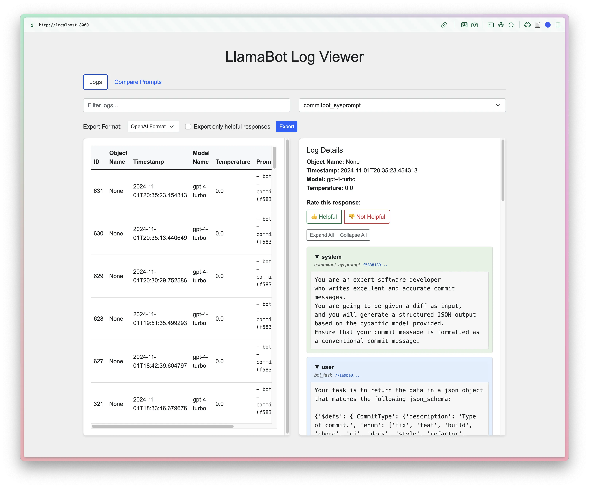
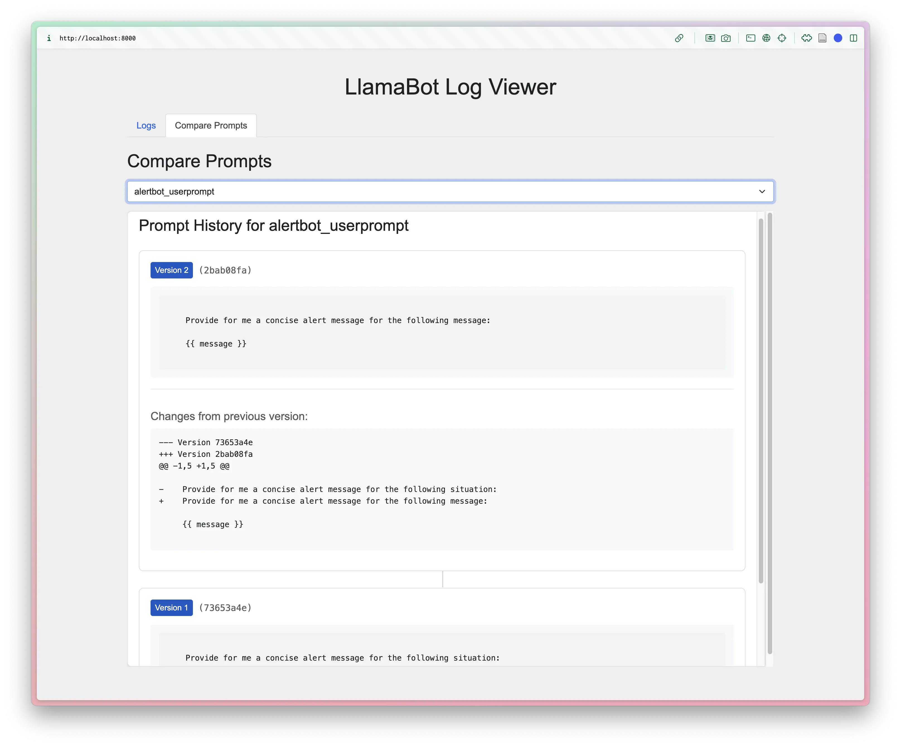
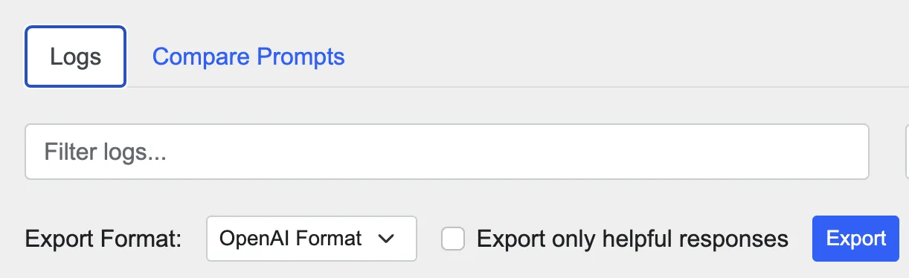

written by Eric J. Ma on 2024-11-02 | tags: llamabot logging software development llm large language models web development version control
In this blog post, I share the latest updates to LlamaBot, including automatic logging of LLM interactions, version-controlled prompt logging, and a new web-based UI for visualizing these logs. These features enhance prompt analysis and make prompt engineering more intuitive and data-driven. Additionally, logs can now be exported in OpenAI fine-tuning format for easier sharing and integration. If you're keen on refining your LLM interactions and prompt crafting, these tools might be just what you need. Curious to see how these new features can streamline your workflow?
Recently, I've added some exciting new features to LlamaBot that focus on keeping track of every interaction and making it easy to understand the history of prompt evolution. Here's a look at what's new:
One of the biggest improvements is that every LLM interaction is now automatically logged to a local SQLite database. Whether you're using LlamaBot to generate text, answer questions, or anything else, these calls are captured without needing manual intervention. This means you have a complete history of your LLM interactions for later review or analysis— all stored locally, making it easy to access without additional cloud dependencies.

Another key addition is automatic version logging of prompts. Whenever you make changes to a prompt, LlamaBot now tracks the version history. This lets you trace back and understand how prompts evolved over time, providing valuable insights into prompt iterations and improvements. Each version is logged with a unique identifier, making it simple to reference past versions for reuse or comparison.

I've also added a new command, llamabot log-viewer launch,
that starts a web-based UI for exploring logged interactions.
This interface allows you to load and view detailed logs,
including prompts, responses, and their versions, all stored in the SQLite database.
The interface features an interactive log table
where you can filter interactions by function name, timestamp, or model version,
giving you a powerful way to sift through data efficiently.
You can visualize changes in prompts using version history tracking,
which displays diffs between different versions, making it clear how each prompt evolved.
Additionally, the UI enables you to inspect how different parameters,
such as model type or temperature, affected the responses,
helping you refine your approach systematically.
(These were shown in the screenshots above!)
To launch it, you do:
llamabot log-viewer launch
This visualization tool is designed to be an useful tool for anyone wanting to dive deep into prompt analysis, refine their approaches, and make prompt engineering both intuitive and data-driven. By providing rich visual comparisons, filtering options, and an easy-to-use interface, this tool empowers you to iterate faster and more effectively.
To make working with your logged interactions even more flexible, you can now export the logs in OpenAI format directly from the web-based UI. This feature is particularly useful if you want to share the logs with collaborators, integrate them into other workflows, or simply keep an external backup. The OpenAI export captures all the key details of your LLM interactions, providing a structured, human-readable representation. Support for additional formats, such as those used for fine-tuning Llama, is planned for future updates, making it even easier to use your data in different contexts, such as when you want to fine-tuning an LLM to produce a cheaper LLM that performs well on your specific task. Every LLM call is valuable, don't let them go to waste!

If you're interested in digging deeper into your LLM interactions or improving your prompt crafting through detailed iteration tracking, I think you'll find these new features super useful. Feel free to give them a try and let me know your thoughts!
P.S. As always, all of these were coded up using AI assistance in Cursor! And with GitHub Copilot Edit's release, we finally have competition in the space of AI-assisted code generation -- it's an exciting time to be a coder!
@article{
ericmjl-2024-introducing-new-local-llamabot-logging-features,
author = {Eric J. Ma},
title = {Introducing new (local) LlamaBot logging features},
year = {2024},
month = {11},
day = {02},
howpublished = {\url{https://ericmjl.github.io}},
journal = {Eric J. Ma's Blog},
url = {https://ericmjl.github.io/blog/2024/11/2/introducing-new-local-llamabot-logging-features},
}
I send out a newsletter with tips and tools for data scientists. Come check it out at Substack.
If you would like to sponsor the coffee that goes into making my posts, please consider GitHub Sponsors!
Finally, I do free 30-minute GenAI strategy calls for teams that are looking to leverage GenAI for maximum impact. Consider booking a call on Calendly if you're interested!